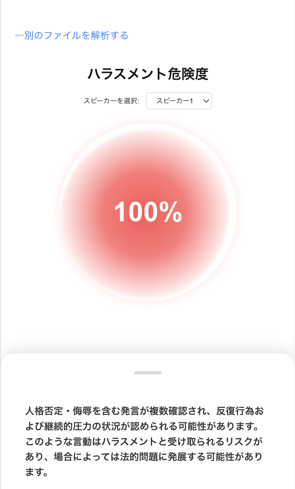
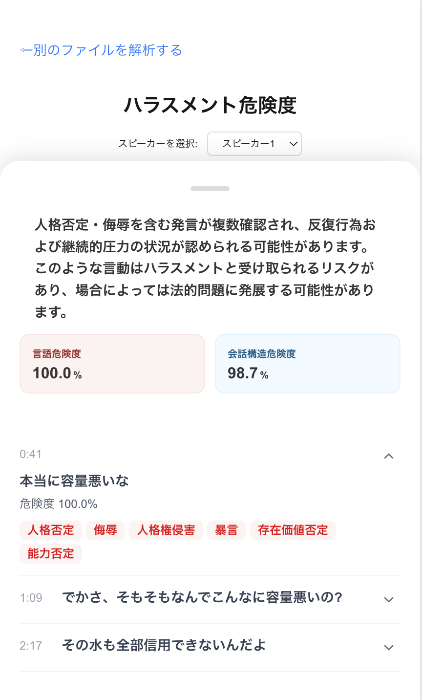

Python HSIE
（Harassment Structure Index Evidence）
言語の攻撃性と会話の構造性の統合による
世界初のハラスメント検知システム
言語攻撃性・会話構造性を統合し、ハラスメント構造を数値化し、法的リスクまで提示できるマルチモーダルAI
プロジェクト概要
HSIEは、言語攻撃性・会話構造性という2つの観点から人間のコミュニケーション行動を分析し、ハラスメント行動を数値化・可視化するマルチモーダルAI研究プロジェクトです。
発話内容の攻撃性、会話の支配構造を統合して「ハラスメント構造指数（HSI）」を算出し、さらに判例データと照合することで法的リスクや証拠価値まで提示します。
従来のテキストベース判定では捉えきれなかった、日本語特有の婉曲的表現や沈黙・話し方の圧といった要素を対象とし、被害者の「証拠がない」という課題と、加害者の「無自覚な再発」という構造的問題の両面にアプローチすることを目的としています。
現在はPythonを用いてこのシステムのAPI化したエンジンが完成し、Reactを用いてエンジンを統合したwebアプリをローカル上で動作する形で作成が完了しました。インフラやマネタイズモデルが完了次第リリース可能です。
このエンジンではBERTを用いた独自の学習手法を使用し、7指標による言語の攻撃性の分析を可能にし、一から構築した会話構造の支配性を可視化するロジックを用いることで従来検知することができなかった婉曲的侮辱や一見攻撃性のない発言に見える無自覚な圧による高精度なハラスメントの検知を可能になりました。
作成した独自の検知手法を提案する論文とこのシステムにより社会に貢献することを目標に6月に控える学会の準備を進めています。
開発の背景
①社会的背景
職場や教育現場におけるハラスメントは年々深刻化している一方で、
・被害者の約40%が誰にも相談できていない
・相談を断念する理由の約半数が「証拠がない」
・加害者の約6割が無自覚のまま行為を繰り返している
といった構造的課題が存在します。
②技術的課題背景
既存のハラスメント検知システムは主にテキスト分析に依存しており、
・沈黙による圧力
・発話の遮断や一方的な会話支配
・日本語特有の遠回しな人格否定
といった 「言語の攻撃性・会話の構造性に宿る圧力」 を十分に扱えていません。
そこで私は、
「ハラスメントを感情や単語ではなく、全体構造として捉え直す」
という視点から本プロジェクトを立ち上げました。
技術的な挑戦
①マルチモーダル統合設計
HSIEでは以下の2つのモデルを独立して設計し、最終的に統合しています。
会話構造モデル（S）
発話占有率、割り込み、否定連鎖などから支配構造を完全独自モデルを構築して分析
言語攻撃性モデル（L）
日本語特有の婉曲的侮辱や命令表現などを独自学習モデルのBERTで7指標による解析
これらを単純に足し合わせるのではなく、 過大評価を防ぐための重み付け・非線形統合（シグモイド）・分類ロジックによって HSI（0〜100）という行動構造指数を設計しました。
②法令検索APIとの接続（HSIE）
算出されたHSIによるエビデンス入力として、
・該当項目をクエリとしe-Govによる検索
・類似度による法令抽出
・証拠の信頼性を考慮したタグ付けを行ったEvidenceの算出
を行い、構造 × 法的観点を統合したHSIEとして最終出力します。
これは単なる分類AIではなく、
「AIがどのように判断したかを人が説明できる」ことを重視した設計です。
学んだこと
・単一モデルよりも システム全体の設計思想が精度を左右すること
・マルチモーダルAIでは「統合ロジック」が最も難しく、最も価値が出ること
・精度指標は
タスクの性質から逆算して設計すべきであること
・社会課題は「感情」ではなく「構造」に分解することで技術に落とせる
・AIは結論を出す存在ではなく、人の判断を支援する道具として設計すべき
・法律・心理・技術といった異分野を横断することで、初めて解ける問題がある


完了したタスク
- プロジェクト全体の企画立案およびコンセプト設計
- 企画書の作成（社会課題・目的・将来像の整理）
- 要件定義書の作成（業務要件・機能要件・非機能要件・技術要件）
- 基本設計書の作成
- 詳細設計書の作成
- エントリーポイント層 詳細設計書の作成
- エントリーポイント層のPython実装
- データ前処理層（音声・テキスト・メタ情報）の詳細設計書
- データ前処理層（音声・テキスト・メタ情報）の実装
- 言語攻撃性分析層の詳細設計書
- 言語攻撃性分析層の実装
- 会話構造分析層の詳細設計書
- 会話構造分析層の実装
- HSI統合ロジック・スコアリング層の詳細設計書
- HSI統合ロジック・スコアリング層の実装
- HSI説明層の詳細設計書
- HSI説明層の実装
- 法令取得層の詳細設計書
- 法令取得層の実装
- HSIEエンジンの統合・API化実装
- 基音声入力の取得およびメタデータ管理（時刻・話者情報など）
- 音声認識（ASR）による音声 → テキスト変換
主な機能
・会話構造分析
- 発話占有率
- 割り込み検知
- 否定連鎖の分析
- 特定条件下による占有率反転ロジック
言語攻撃性分析
- 侮辱・婉曲的侮辱表現の検知
- 強制命令・責任転嫁表現の検知
- 人格否定・能力否定・価値観否定の検知
使用技術
- Python
- FastAPI
- React
- cursor
- Whisper base
- librosa / torchaudio
- 日本語BERT系モデル
- ルールベース × BERTのハイブリッド設計
- マルチモーダルスコア統合アルゴリズム
- 要件定義・基本設計・詳細設計ベースの段階的開発
- 疎結合を前提としたレイヤード構成
- Auth0
- e-Gov
今後の改善点
- 独自BERTモデルの学習データ追加
- 法令抽出クエリの強化・top5化
- プラットフォーム化によるUX向上
- ASR精度の向上による評価指標の向上
- 判例抽出ロジック・学習ロジックによるパーソナライズ向上
- 教育・予防用途への応用検討